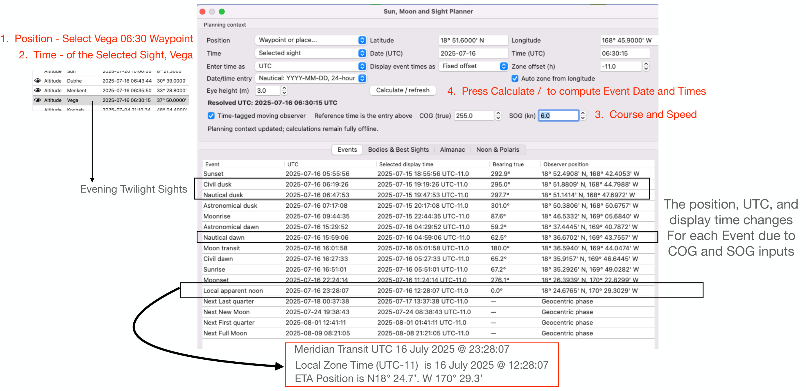

Full-size illustration. Scroll to inspect the details.

1. Position - Select Vega 06:30 Waypoint
2. Time - of the Selected Sight, Vega
4. Press Calculate / to compute Event Date and Times
3. Course and Speed
Evening Twilight Sights
The position, UTC, and
display time changes For each Event due to
COG and SOG inputs
Meridian Transit UTC 16 July 2025 @ 23:28:07
Local Zone Time (UTC-11) is 16 July 2025 @ 12:28:07 ETA Position is N18° 24.7’. W 170° 29.3’